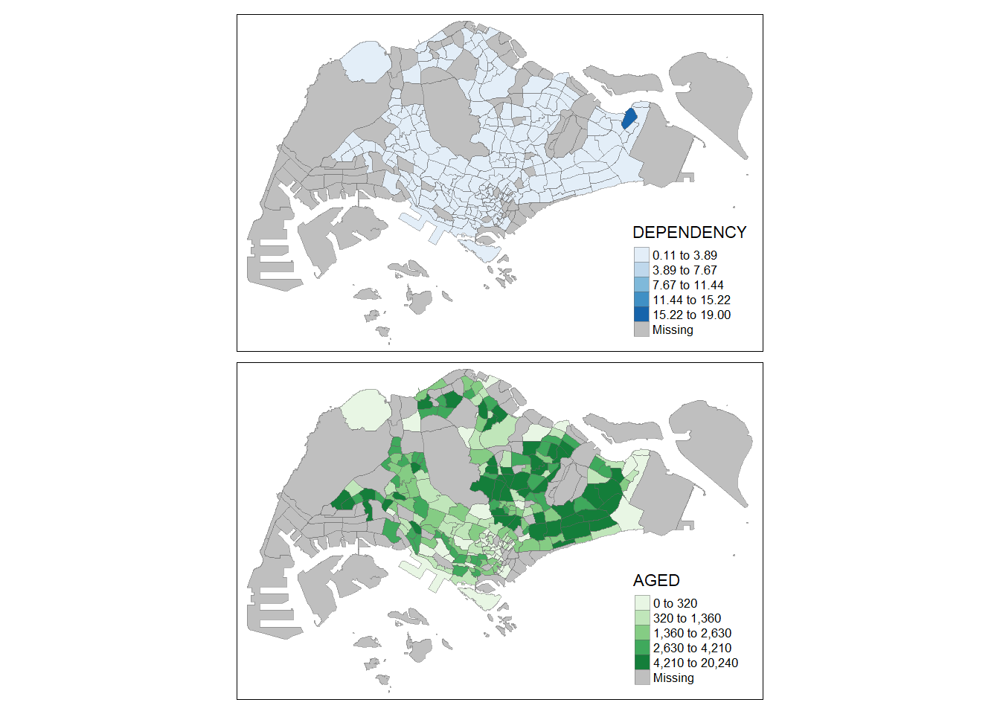

pacman::p_load(tidyverse, tmap, sf)Hands-on Exercise 07 - Choropleth Mapping
1. Overview
In the first part of the seventh lesson, we learn to create choropleth maps to visualise spaital distributions of data. This will be done using the tmap package.
2. Getting Started
2.1. Installing and Loading Packages
We will use the following R packages in addition to tidyverse for this exercise:
The packages to be used can be installed and loaded into the R environment using the p_load() function from the pacman package:
2.2. The Data
We will use the following data sets for this exercise:
| Data | Format | Source | Description |
|---|---|---|---|
| Master Plan 2014 Subzone Boundary (Web) | ESRI shapefile | data.gov.sg | Geospatial data containing geographical boundary of Singapore at the planning subzone level. |
| Singapore Residents by Planning Area / Subzone, Age Group, Sex and Type of Dwelling, June 2011-2020 | CSV | singstat.gov.sg | Aspatial data containing demographics by Planning Area (PA) and Subzone (SZ). |
2.2.1. Import Geospatial Data
We will read the geospatial data into the R environment using the st_read() function from the sf package. We will import the MP14_SUBZONE_WEB_PL shapefile into into R as a simple feature data frame.
mpsz <- st_read(dsn = "data/geospatial",
layer = "MP14_SUBZONE_WEB_PL")Reading layer `MP14_SUBZONE_WEB_PL' from data source
`C:\noelnomel\ISSS608-VAA\hands_on_ex\hands_on_ex07\data\geospatial'
using driver `ESRI Shapefile'
Simple feature collection with 323 features and 15 fields
Geometry type: MULTIPOLYGON
Dimension: XY
Bounding box: xmin: 2667.538 ymin: 15748.72 xmax: 56396.44 ymax: 50256.33
Projected CRS: SVY21mpszSimple feature collection with 323 features and 15 fields
Geometry type: MULTIPOLYGON
Dimension: XY
Bounding box: xmin: 2667.538 ymin: 15748.72 xmax: 56396.44 ymax: 50256.33
Projected CRS: SVY21
First 10 features:
OBJECTID SUBZONE_NO SUBZONE_N SUBZONE_C CA_IND PLN_AREA_N
1 1 1 MARINA SOUTH MSSZ01 Y MARINA SOUTH
2 2 1 PEARL'S HILL OTSZ01 Y OUTRAM
3 3 3 BOAT QUAY SRSZ03 Y SINGAPORE RIVER
4 4 8 HENDERSON HILL BMSZ08 N BUKIT MERAH
5 5 3 REDHILL BMSZ03 N BUKIT MERAH
6 6 7 ALEXANDRA HILL BMSZ07 N BUKIT MERAH
7 7 9 BUKIT HO SWEE BMSZ09 N BUKIT MERAH
8 8 2 CLARKE QUAY SRSZ02 Y SINGAPORE RIVER
9 9 13 PASIR PANJANG 1 QTSZ13 N QUEENSTOWN
10 10 7 QUEENSWAY QTSZ07 N QUEENSTOWN
PLN_AREA_C REGION_N REGION_C INC_CRC FMEL_UPD_D X_ADDR
1 MS CENTRAL REGION CR 5ED7EB253F99252E 2014-12-05 31595.84
2 OT CENTRAL REGION CR 8C7149B9EB32EEFC 2014-12-05 28679.06
3 SR CENTRAL REGION CR C35FEFF02B13E0E5 2014-12-05 29654.96
4 BM CENTRAL REGION CR 3775D82C5DDBEFBD 2014-12-05 26782.83
5 BM CENTRAL REGION CR 85D9ABEF0A40678F 2014-12-05 26201.96
6 BM CENTRAL REGION CR 9D286521EF5E3B59 2014-12-05 25358.82
7 BM CENTRAL REGION CR 7839A8577144EFE2 2014-12-05 27680.06
8 SR CENTRAL REGION CR 48661DC0FBA09F7A 2014-12-05 29253.21
9 QT CENTRAL REGION CR 1F721290C421BFAB 2014-12-05 22077.34
10 QT CENTRAL REGION CR 3580D2AFFBEE914C 2014-12-05 24168.31
Y_ADDR SHAPE_Leng SHAPE_Area geometry
1 29220.19 5267.381 1630379.3 MULTIPOLYGON (((31495.56 30...
2 29782.05 3506.107 559816.2 MULTIPOLYGON (((29092.28 30...
3 29974.66 1740.926 160807.5 MULTIPOLYGON (((29932.33 29...
4 29933.77 3313.625 595428.9 MULTIPOLYGON (((27131.28 30...
5 30005.70 2825.594 387429.4 MULTIPOLYGON (((26451.03 30...
6 29991.38 4428.913 1030378.8 MULTIPOLYGON (((25899.7 297...
7 30230.86 3275.312 551732.0 MULTIPOLYGON (((27746.95 30...
8 30222.86 2208.619 290184.7 MULTIPOLYGON (((29351.26 29...
9 29893.78 6571.323 1084792.3 MULTIPOLYGON (((20996.49 30...
10 30104.18 3454.239 631644.3 MULTIPOLYGON (((24472.11 29...Looking at the data, it is observed that the simple feature data frame contains 323 features and 15 fields. The data frame contains multipolygons and it is projected using SVY21, Singapore’s coordinate system.
2.3.2. Import Aspatial Data
Lastly, we will read the aspatial data into the R environment using the read_csv() function from the readr package found in tidyverse.
popdata <- read_csv("data/aspatial/respopagesextod2011to2020.csv")
glimpse(popdata)Rows: 984,656
Columns: 7
$ PA <chr> "Ang Mo Kio", "Ang Mo Kio", "Ang Mo Kio", "Ang Mo Kio", "Ang Mo K…
$ SZ <chr> "Ang Mo Kio Town Centre", "Ang Mo Kio Town Centre", "Ang Mo Kio T…
$ AG <chr> "0_to_4", "0_to_4", "0_to_4", "0_to_4", "0_to_4", "0_to_4", "0_to…
$ Sex <chr> "Males", "Males", "Males", "Males", "Males", "Males", "Males", "M…
$ TOD <chr> "HDB 1- and 2-Room Flats", "HDB 3-Room Flats", "HDB 4-Room Flats"…
$ Pop <dbl> 0, 10, 30, 50, 0, 0, 40, 0, 0, 10, 30, 60, 0, 0, 40, 0, 0, 10, 30…
$ Time <dbl> 2011, 2011, 2011, 2011, 2011, 2011, 2011, 2011, 2011, 2011, 2011,…Using glimpse to view the data, it is observed that the data contains 984,656 records with 7 columns including the Planning Area, Subzone (SZ), and Age Group (AG).
2.3. Data Preparation
We will first prepare a data table with values from year 2020 containing the variables PA, SZ, YOUNG, ECONOMICALLY ACTIVE, AGED, TOTAL, DEPENDENCY based on the following definitions:
- YOUNG: AG 0_to_4 to AG 20_to_24
- ECONOMICALLY ACTIVE: AG 25_to_29 to AG 60_to_64
- AGED: AG 65_to_69 to AG 90_and_over
- TOTAL: Sum of population of all age groups
- DEPENDENCY: Ratio of YOUNG and AGED to ECONOMICALLY ACTIVE
2.3.1. Data Wrangling
We will create the desired data frame using the following code:
popdata2020 <- popdata %>%
filter(Time == 2020) %>%
group_by(PA, SZ, AG) %>%
summarise(`POP` = sum(`Pop`)) %>%
ungroup() %>%
pivot_wider(names_from=AG,
values_from=POP) %>%
mutate(YOUNG = rowSums(.[3:6])
+rowSums(.[12])) %>%
mutate(`ECONOMY ACTIVE` = rowSums(.[7:11])+
rowSums(.[13:15])) %>%
mutate(`AGED`=rowSums(.[16:21])) %>%
mutate(`TOTAL`=rowSums(.[3:21])) %>%
mutate(`DEPENDENCY` = (`YOUNG` + `AGED`)
/`ECONOMY ACTIVE`) %>%
select(`PA`, `SZ`, `YOUNG`,
`ECONOMY ACTIVE`, `AGED`,
`TOTAL`, `DEPENDENCY`) %>%
mutate_at(.vars = vars(PA, SZ),
.funs = funs(toupper)) %>%
filter(`ECONOMY ACTIVE` > 0)2.3.2. Joining Geospatial and Aspatial Data
We will use the left_join() function from the dplyr package to merge the aspatial data to the geospatial data. This ensures that the simple feature data frame is retained.
mpsz_pop2020 <- left_join(mpsz, popdata2020,
by = c("SUBZONE_N" = "SZ"))To save this merged data frame for future use, we can use write_rds() function from the readr package to create a RDS file locally.
write_rds(mpsz_pop2020, "data/rds/mpszpop2020.rds")The RDS file can be imported into R using the read_rds() function from the readr package:
mpsz_pop2020 <- read_rds("data/rds/mpszpop2020.rds")3. Choropleth Mapping Using tmap
3.1. Quick Map Using qtm()
When a quick visualisation is required, we can use qtm() to create a concise and default visualisation.
tmap_mode("plot")
qtm(mpsz_pop2020,
fill = "DEPENDENCY")
3.2. Using tmap Elements
Using the elements of tmap, we are able to customise and adjust the aesthetics of individual layers.
The basic building block of tmap is tm_shape() and tm_polygons(). tm_shape() is used to define the input data, and tm_polygons() is used to draw the polygons.
tm_shape(mpsz_pop2020) +
tm_polygons()
tm_fill() is used to shade the polygons by using the default colour scheme while tm_border() adds borders of the shapefule onto the map.
tm_shape(mpsz_pop2020)+
tm_fill("DEPENDENCY")
The subzones are shaded according to the dependency ratio. We can add borders using the following code:
tm_shape(mpsz_pop2020)+
tm_fill("DEPENDENCY") +
tm_borders(lwd = 0.1, alpha = 1)
tm_polygons() is a wrapper of tm_fill() and tm_border() by fulfilling the both functions in one. We can use geographical distribution of a selected variable by using tm_polygons().
tm_shape(mpsz_pop2020)+
tm_polygons("DEPENDENCY")
3.3. Data Classification Methods
tmap provides ten data classification methods to group a large number of observations into data ranges or classes: fixed, sd, equal, pretty (default), quantile, kmeans, hclust, bclust, fisher, and jenks.
tm_shape(mpsz_pop2020)+
tm_fill("DEPENDENCY",
n = 5,
style = "sd") +
tm_borders(alpha = 0.5)
tm_shape(mpsz_pop2020)+
tm_fill("DEPENDENCY",
n = 10,
style = "sd") +
tm_borders(alpha = 0.5)tm_shape(mpsz_pop2020)+
tm_fill("DEPENDENCY",
n = 2,
style = "sd") +
tm_borders(alpha = 0.5)
Note
Using different number of classes narrows the range of each bin and increases the range of colours used to represent each bin.
tm_shape(mpsz_pop2020)+
tm_fill("DEPENDENCY",
n = 5,
style = "equal") +
tm_borders(alpha = 0.5)
tm_shape(mpsz_pop2020)+
tm_fill("DEPENDENCY",
n = 5,
style = "pretty") +
tm_borders(alpha = 0.5)
tm_shape(mpsz_pop2020)+
tm_fill("DEPENDENCY",
n = 5,
style = "quantile") +
tm_borders(alpha = 0.5)
tm_shape(mpsz_pop2020)+
tm_fill("DEPENDENCY",
n = 5,
style = "kmeans") +
tm_borders(alpha = 0.5)
tm_shape(mpsz_pop2020)+
tm_fill("DEPENDENCY",
n = 5,
style = "hclust") +
tm_borders(alpha = 0.5)
tm_shape(mpsz_pop2020)+
tm_fill("DEPENDENCY",
n = 5,
style = "bclust") +
tm_borders(alpha = 0.5)
Committee Member: 1(1) 2(1) 3(1) 4(1) 5(1) 6(1) 7(1) 8(1) 9(1) 10(1)
Computing Hierarchical Clusteringtm_shape(mpsz_pop2020)+
tm_fill("DEPENDENCY",
n = 5,
style = "fisher") +
tm_borders(alpha = 0.5)
tm_shape(mpsz_pop2020)+
tm_fill("DEPENDENCY",
n = 5,
style = "jenks") +
tm_borders(alpha = 0.5)
3.4. Using Custom Break Points
It is possible to override the default breaks computerd by the built-in styles (as seen above) by using the breaks argument in tm_fill().
Important
In order to have n categories, n+1 elements must be specified in the breaks argument as the breaks include a minimum and maximum.
Values must also be specified in ascending order.
First, we will view the descriptive statistics of the variable before deciding on the break points.
summary(mpsz_pop2020$DEPENDENCY) Min. 1st Qu. Median Mean 3rd Qu. Max. NA's
0.1111 0.7147 0.7866 0.8585 0.8763 19.0000 92 Using the results, we can choose to set the break points to be at 0.60, 0.70, 0.80, and 0.90, excluding the minimum of 0 and maximum of 1.00.
tm_shape(mpsz_pop2020)+
tm_fill("DEPENDENCY",
breaks = c(0, 0.60, 0.70, 0.80, 0.90, 1.00)) +
tm_borders(alpha = 0.5)
4. RColorBrewer with tmap
tmap supports colour ramps defined by the user or predefined colour ramps from the RColorBrewer package.
The colour can be changed using the palette argument in tm_fill().
tm_shape(mpsz_pop2020)+
tm_fill("DEPENDENCY",
n = 6,
style = "quantile",
palette = "Blues") +
tm_borders(alpha = 0.5)
We can reverse the order of the colour shades by adding a “-” prefix:
tm_shape(mpsz_pop2020)+
tm_fill("DEPENDENCY",
style = "quantile",
palette = "-Greens") +
tm_borders(alpha = 0.5)
5. Map Layouts
Map layouts refer to the combination of all map elements to create a cohesive map. Some map elements include the objects to be mapped, map title, legend, scale bar, and aspect ratios.
There are several options provided by tmap to customise the map elements such as legend and title.
tm_shape(mpsz_pop2020)+
tm_fill("DEPENDENCY",
style = "jenks",
palette = "Blues",
legend.hist = TRUE,
legend.is.portrait = TRUE,
legend.hist.z = 0.1) +
tm_layout(main.title = "Distribution of Dependency Ratio by planning subzone \n(Jenks classification)",
main.title.position = "center",
main.title.size = 1,
legend.height = 0.45,
legend.width = 0.35,
legend.outside = FALSE,
legend.position = c("right", "bottom"),
frame = FALSE) +
tm_borders(alpha = 0.5)
tmap_style() can be used to change the style of the map based on some prefixed look and feel.
tm_shape(mpsz_pop2020)+
tm_fill("DEPENDENCY",
style = "quantile",
palette = "-Greens") +
tm_borders(alpha = 0.5) +
tmap_style("classic")
The default style is “white”.
tmap_style("white")Additional features such as compass, scale bar, and grid lines can be added to the map using tm_compass(), tm_scale_bar(), and tm_grid() respectively.
tm_shape(mpsz_pop2020)+
tm_fill("DEPENDENCY",
style = "quantile",
palette = "Blues",
title = "No. of persons") +
tm_layout(main.title = "Distribution of Dependency Ratio \nby planning subzone",
main.title.position = "center",
main.title.size = 1.2,
legend.height = 0.45,
legend.width = 0.35,
frame = TRUE) +
tm_borders(alpha = 0.5) +
tm_compass(type="8star", size = 2) +
tm_scale_bar(width = 0.15) +
tm_grid(lwd = 0.1, alpha = 0.2) +
tm_credits("Source: Planning Sub-zone boundary from Urban Redevelopment Authorithy (URA)\n and Population data from Department of Statistics DOS",
position = c("left", "bottom"))6. Drawing Small Multiple Choropleth Maps
Facet maps are composed of multiple maps arranged in a grid (adjacent or stacked). This allows for the visualisation of changes in spatial relationships in response to another variable such as time.
Small multiples, or facet maps, can be plotted in three ways:
Small multiple maps can be created by defining ncols in tm_fill():
tm_shape(mpsz_pop2020) +
tm_fill(c("YOUNG", 'AGED'),
style = 'equal',
palette = 'Blues') +
tm_layout(legend.position = c('right','bottom')) +
tm_borders(alpha = 0.5)
Small multiple maps can also be created by assigning multiple values to at least one of the aesthetic arguments:
tm_shape(mpsz_pop2020) +
tm_fill(c("DEPENDENCY", 'AGED'),
style = c('equal','quantile'),
palette = list('Blues', 'Greens')) +
tm_layout(legend.position = c('right','bottom')) +
tm_borders(alpha = 0.5)
Small multiple choropleth maps can be created using tm_facets():
tm_shape(mpsz_pop2020) +
tm_fill("DEPENDENCY",
style = 'quantile',
palette = 'Blues',
thres.poly = 0) +
tm_facets(by = 'REGION_N',
free.coords = TRUE,
drop.shapes = TRUE) +
tm_layout(legend.show = FALSE,
title.position = c("center", "center"),
title.size = 20)+
tm_borders(alpha = 0.5)
Small multiple choropleth maps can be created using tm_arrange():
youngmap <- tm_shape(mpsz_pop2020) +
tm_polygons("YOUNG",
style = "quantile",
palette = "Blues")
agedmap <- tm_shape(mpsz_pop2020) +
tm_polygons("AGED",
style = 'quantile',
palette = "Blues")
tmap_arrange(youngmap, agedmap, asp = 1, ncol = 2)
7. Using Selection Criterion to Map Spatial Object
The selection function can be used to map spatial objects that meet a specified criterion.
tm_shape(mpsz_pop2020[mpsz_pop2020$REGION_N == 'CENTRAL REGION',]) +
tm_fill("DEPENDENCY",
style = "quantile",
palette = "Blues",
legend.hist = TRUE,
legend.is.portrait = TRUE,
legend.hist.z = 0.1) +
tm_layout(legend.outside = TRUE,
legend.height = 0.45,
legend.width = 5.0,
legend.position = c("right","bottom"),
frame = FALSE) +
tm_borders(alpha = 0.5)